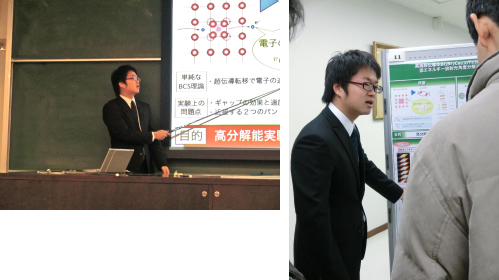
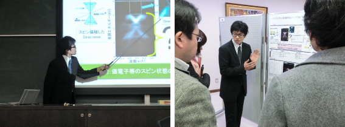
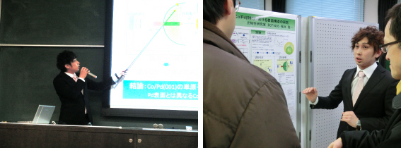
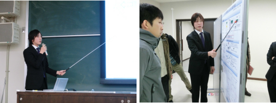
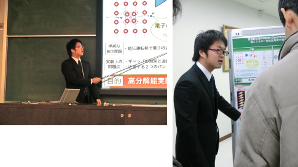
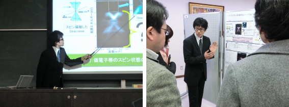
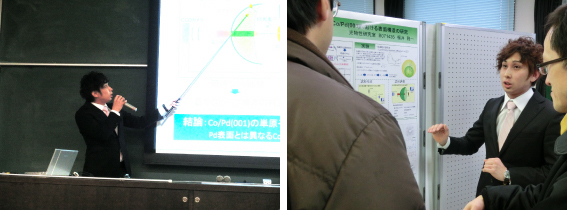
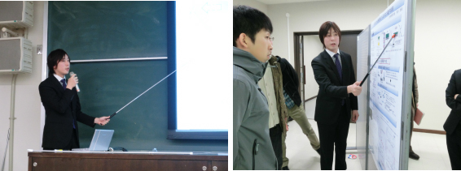

平成 22 年度 卒業論文発表会
広島大学理学部で 17 日、理学部物理科学科に在籍する ４ 年生による卒業研究の発表会が開かれた。光物性研究室に在籍する市来、岡本、福井、前川は座学や物性セミナーから物理を学び、自分の手で実験を行うことで理解を深めてきた。発表会では 1 年間取り組んできた研究を口頭とポスターにより発表し、議論を交わした。
市来 健吾
「高温超伝導体 Bi2Sr2Ca0.92Y0.08Cu2O8+δ の低エネルギー放射光角度分解光電子分光」

岡本 和晃
「トポロジカル絶縁体 Bi2Y3 (Y = Se,Te) のスピン角度分解光電子分光」

福井 雅一
「磁性単原子層薄膜 Co/Pd (001) における表面構造の研究」

前川 貴政
「トポロジカル絶縁体 Bi2Te3 超薄膜のスピン電子状態」

「高温超伝導体 Bi2Sr2Ca0.92Y0.08Cu2O8+δ の低エネルギー放射光角度分解光電子分光」

「トポロジカル絶縁体 Bi2Y3 (Y = Se,Te) のスピン角度分解光電子分光」

「磁性単原子層薄膜 Co/Pd (001) における表面構造の研究」

前川 貴政
「トポロジカル絶縁体 Bi2Te3 超薄膜のスピン電子状態」
